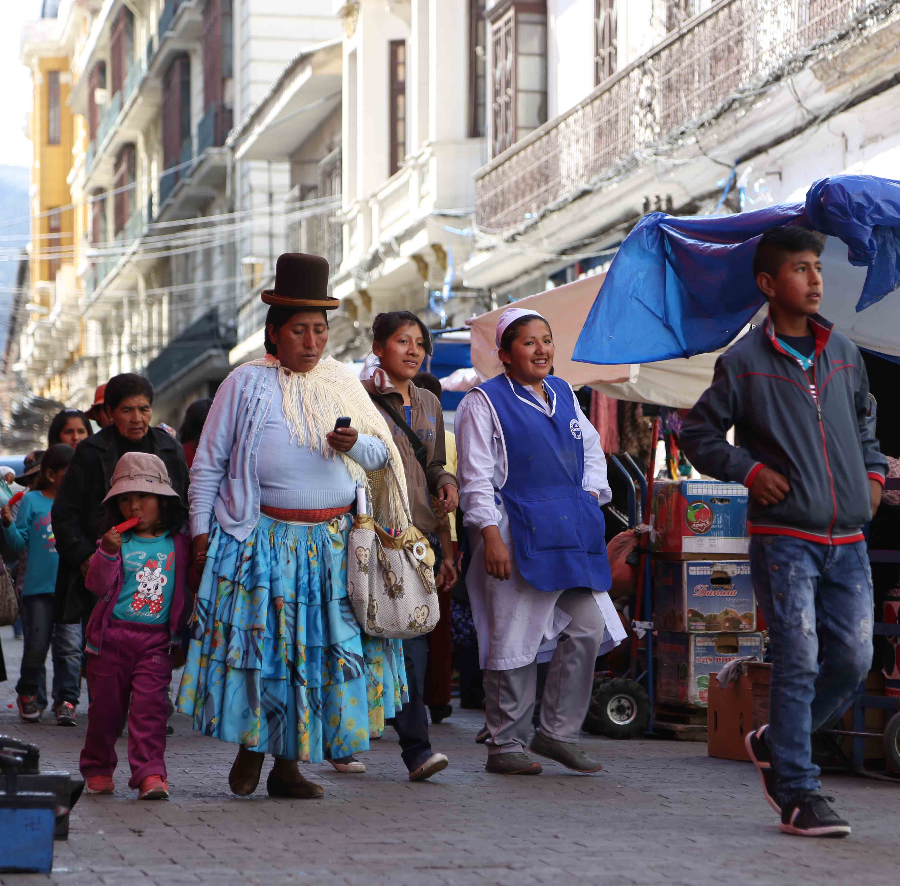
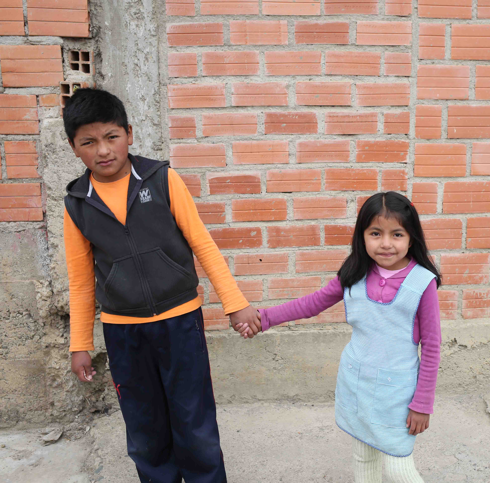

Bolivia's Untapped Salt Flats Hold the Key to the Future of Energy
The towering mountains of the high Andean Plateau seem unmovable—static giants fixed against a thin blue sky. But an ancient Bolivian legend holds that long ago, the volcanoes of the altiplano could move and speak to each other. According to the myth, there was only one female volcano, Tunupas, and she was universally beloved and courted. But when she became pregnant and gave birth, the other volcanoes were so jealous they banished her baby to a far off land.
The gods were furious at the squabbling volcanoes, and as punishment they took away the volcanoes’ ability to move and speak. Unable to reach her baby, a devastated Tunupas mourned the loss of her child. Her salty tears and the breast milk poured out onto the arid landscape, creating the great Salar de Uyuni—the largest salt flat in the world.
Beneath this desolate, cracked landscape lies the word’s largest deposit of lithium—the element that will power our lives.
When you speak with Bolivians about lithium the word “sueno” comes up again and again. Dream. For decades that is all lithium extraction has been—an unrealized dream. Bolivia’s vast lithium resources—by some estimates more than half of the world’s lithium reserves—have never been tapped. But after years of false starts, it seems that the impoverished nation may at last be on track to become a major player in the world’s lithium industry.
Bolivia’s complicated relationship to its natural resources began centuries ago. For hundreds of years, this country has been the victim of the so-called “resource curse”—a label for a country with an abundance of valuable natural resources but unable to capitalize on its mineral wealth to develop a strong economy. In 1545, the Spanish began mining Bolivia for silver. In the years since, the country has been exploited for silver, tin, zinc, lead, and gold. Yet its citizens have seen little reward from their mineral-rich earth; almost all of Bolivia’s mineral wealth has flowed out of the country.
“What usually happens is a foreign company will work together with a national company, because the national company won’t have the expertise or funds,” says Ximena Warnaars, an environmental anthropologist with a PhD in mining. “Then the foreign company will take all the minerals and all the money and give a little back to the national company.”
Warnaars works on indigenous and environmental issues in Bolivia, Colombia, Ecuador, and Peru for EarthRights International, a DC based organization devoted to environmental protection and human rights. “Mining is a complicated story in Bolivia,” she says. “[Bolivians] live with mining, it’s part of everyone’s livelihoods. It’s embedded in their culture. There are little mining gods they pray to that will help them show where gold is.”


Bolivia’s new constitution guarantees that the nation’s natural resources belong to the Bolivian people. Citizens hope that lithium mining will boost the historically impoverished nation’s economy.
Bolivia’s relationship to its mineral wealth went through some significant changes once Evo Morales took office in 2006. Morales, Bolivia’s first indigenous president, promised to return Bolivia’s natural wealth to its citizens. Soon after he was elected, he began nationalizing oil and gas industries, much to the surprise of the foreign companies working on mining projects in Bolivia.
Morales has called lithium the “hope of humanity” and Bolivia’s new constitution, enacted in 2009, guarantees that the nation’s natural resources belong to the Bolivian people, with all profits administered to the citizens by the government. It’s a lofty promise, but whether or not Morales’ changes will bring wealth to the impoverished country will depend on how quickly and effeciently they are able to produce high grade lithium carbonate--the material used in lithium-ion batteries. The Ministry of Mining operates in almost complete secrecy, and with every year that passes doubt increases over whether the government can figure out how to extract lithium at all.
Luis Alberto Echazu sits behind an enormous table in a conference room at the Ministry of Mining’s building in downtown La Paz. The uninspired room is a world away from the shimmering surfaces of the salt flats 300 miles south.
Echazu’s slight frame is dwarfed by the massive portrait of Evo Morales, which hangs on the wall behind him. Under Morales’ leadership, Echazu oversees Bolivia’s lithium projects. As Minister of Mining, he is the man responsible for reimagining the country’s relationship to its resources. And his plans are ambitious: Echazu’s goal is to build a lithium-based economy where mining, extraction, and battery manufacturing all take place in Bolivia.
“We are certain that in five years time Bolivia will produce at least 30,000 tons of battery grade lithium carbonate,” he says. “A significant amount of this will be used inside the country for the purpose of manufacturing battery-related products: this means we’ll be producing cathode materials [to make battery electrodes] at an industrial level and eventually a battery manufacturing plant with cathodes made in Bolivia.”
To be certain these goals can be achieved in five years seems extreme. After decades of grand promises and little progress, many are skeptical that Bolivia can turn any of its raw lithium into commercial-grade lithium carbonate—much less 30,000 tons. The government is so determined to keep multinational corporations away from their lithium supply that they’ve refused to bring in outside expertise. With only a handful of mining experts in the country, the Ministry of Mining has yet to produce commercial quantities of high grade lithium carbonate despite almost a decade of effort.
Oscar Vargas, a Bolivian economist who once worked on the financial models for the government’s lithium projects, calls Echazu’s cloak-and-dagger approach to production “Stalinist.” And he believes the government’s secretive strategy will ultimately hamper Bolivia when it tries to enter the international market. Because Echazu’s Ministry is focused on production rather than finding a market, Bolivia may end up putting an enormous amount of effort into production and find themselves with no one to sell to. Vargas says this strategy of putting the cart before the horse is “ridiculous—first you need a market.”
But according to Echazu, this approach to developing Bolivia’s lithium economy is intentional—he says the ministry is focusing on production before entering the market so that they don’t fall victim to volatile international markets. “Some so-called experts tried to convince us to start with a massive production, but we know that wasn’t the best course of action.” he says. “In the capitalist system, nothing is certain.”
Vargas worries the government’s secrecy has other negative consequences. “Without sharing information, without sharing with the universities we don’t have experts in Bolivia,” Vargas says. “We need at least 100 chemical engineer experts in lithium. There are less than 30 now. The universities don’t talk with the government, the government doesn’t talk with the universities. There is no intellectual production.” He fears that without sharing knowledge, the government will end up repeating the mistakes of the past. “We will repeat the model of the tin and silver if we don’t have intellectual production.”
A worker reinforces the dirt road that connects the new mines to Bolivia’s first lithium extraction plant in Llipi.
On a remote corner of the Salar salt flats, a two-hour drive down a bumpy dirt road from the town of Uyuni and a couple of miles past the small, dusty curiously named village of Rio Grande (there is no river to be seen) sits Bolivia’s first lithium extraction plant, Llipi.
It is not a welcoming place. The area is under military control, and the plant is heavily guarded by men wearing fatigues. Beyond the guard tower a handful of single-story structures are built into the desolate landscape. This small operation represents the current state of Bolivia’s lithium dreams. Here the first Bolivian workers are being trained in lithium extraction. This pilot plant is the model for the much larger extraction facilities the government hopes to build across the Salar de Uyuni.
A few miles past the plant the Salar emerges on the horizon, an endless white landscape cracked in symmetrical polygons the size of stop signs. The plant’s dirt road extends into the salt flats like a runway. A thick black pipe runs parallel to the road, supplying the water needed for the brine solution that pulls the lithium from the earth. Silhouetted against the blinding white of the flats, workers in full body suits and hard hats pile rocks into metal mesh cages to reinforce the narrow dirt road. This road will be used to transport lithium-rich solutions from the brine pools to the Llipi for extraction.
The Llipi extraction plant is under tight military control. For the past few years the Ministry of Mining has conducted lithium exploitation and processing in almost complete secrecy.
The Llipi plant represents the first step in what Morales’ government hopes will be a complete production cycle—from mining the raw materials to manufacturing batteries. So far the pilot plant has barely produced any usable lithium, but according to the government, it is only a matter of time before it will be ready to compete with the world’s leading lithium producers.
Extracting lithium from the earth is both expensive and labor intensive. Because of its chemical structure, lithium cannot be mined in its pure form. In order to extract it from the ground, it is either mined from rock or from a salty brine solution. The massive deposits in Salar de Uyuni will be mined as brine, which requires tremendous amounts of water be pumped into the flats.
The problem is that Bolivia is landlocked and what little water exists goes toward the region’s agricultural economy. A recent drought devastated Bolivian farms and caused the complete evaporation of Bolivia’s second largest lake. Even if the government can streamline production, it will have to figure out how to bring water to the arid area.
Salty brine water is pumped from evaporation pools to the Llipi plant to be processed into high grade lithium carbonate.
Brine mining also requires the use of chemicals, but Echazu brushes aside any concerns about how these materials would effect the environment. “Obviously, we have to use some chemicals during some stages of the process—that’s inevitable,” Echazu says. “Our true intention is not only to obey Bolivia’s environmental laws, but also that all our industrial processes be the least harmful on the environment—water resources, soil, air—as possible.”
But Vargas says the government has yet to perform an in-depth study of how large-scale brine mining would impact the Salar. “You need solvent, chloric acid, all stuff that will contaminate the environment and the water. If you see a gold mine there are no trees—the same will be [true] in the Salar de Uyuni,” he says. “We need a study of the water. We need a study of the real effect of the contamination on the environment.”
Lithium battery technology is often referred to as the foundation for a new energy paradigm, one that will displace our dependence on fossil fuels. It is a paradigm shift that is progressing rapidly. As the Bolivian government continues its covert plans among the ancient volcanoes of the high altiplano, battery manufacturers all over the world are scrambling to lockdown their lithium suppliers for the coming years—some companies, like Tesla, are buying lithium from mines that haven’t even been constructed.
This increased demand on the global reserves is exactly what Bolivia has hoped for. But many have pointed to Bolivia’s halting approach to lithium production as a sign that the country is unable to enter the global lithium market without investments and support from multinational corporations.
For now, the country’s lithium dreams remain trapped beneath its mythic salt flats. If Bolivia wants to make those dreams a reality—reversing the centuries-old resource curse and transforming the well-being of its impoverished citizens—the government will have to prove that it can extract large amounts lithium efficiently within the next year.
“I am in love with lithium” Oscar Vargas says, “because I think it’s the last opportunity for Bolivia [to end] poverty.” But “we have to move very fast,” he says, otherwise the country will “lose a window of opportunity—the last opportunity.”